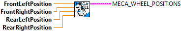
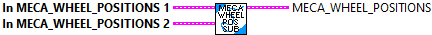

Extract individual positions (distances) from a MecanumDriveWheelPosition data structure.
Parameters:
- Meca_wheel_Position- Data structure
Returns:
- Left Front Position - Distance measured by left front wheel (meters)
- Right Front Position - Distance measured by right front wheel (meters)
- Left Rear Position - Distance measured by left rear wheel (meters)
- Right Rear Position - Distance measured by right rear wheel (meters)

Constructs a MecanumDriveWheelPosition data structure.
Parameters:
- Left Front Position - Distance measured by left front wheel (meters)
- Right Front Position - Distance measured by right front wheel (meters)
- Left Rear Position - Distance measured by left rear wheel (meters)
- Right Rear Position - Distance measured by right rear wheel (meters)
Returns:
- Meca_wheel_Position- Data structure

Subtract two MecanumDriveWheelPosition data structures to create a delta MecanumDriveWheelPosition
Returns MecaWheelPos1 - MecaWheelPos2
Parameters:
- in Meca_wheel_Position1- Data structure
- in Meca_wheel_Position2- Data structure
Returns:
- Meca_wheel_Position- Data structure